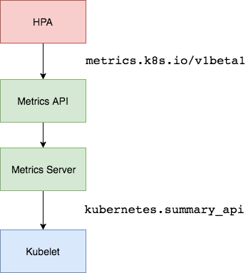

HPA¶
在前面的学习中我们使用了一个 kubectl scale 命令可以来实现 Pod 的扩缩容功能，但是这个是完全手动操作的，要应对线上的各种复杂情况，我们需要能够做到自动化去感知业务，来自动进行扩缩容。为此，Kubernetes 也为我们提供了这样的一个资源对象：Horizontal Pod Autoscaling（Pod 水平自动伸缩），简称 HPA，HPA 通过监控分析一些控制器，其控制的所有 Pod 的负载变化情况来确定是否需要调整 Pod 的副本数量，这是 HPA 最基本的原理：
我们可以简单的通过 kubectl autoscale 命令来创建一个 HPA 资源对象，HPA Controller 默认30s轮询一次（可通过 kube-controller-manager 的--horizontal-pod-autoscaler-sync-period 参数进行设置），查询指定的资源中的 Pod 资源使用率，并且与创建时设定的值和指标做对比，从而实现自动伸缩的功能。
Metrics Server¶
在 HPA 的第一个版本中，我们需要 Heapster 提供 CPU 和内存指标，在 HPA v2 过后就需要安装 Metrcis Server 了，Metrics Server 可以通过标准的 Kubernetes API 把监控数据暴露出来，有了 Metrics Server 之后，我们就完全可以通过标准的 Kubernetes API 来访问我们想要获取的监控数据了：
比如当我们访问上面的 API 的时候，我们就可以获取到该 Pod 的资源数据，这些数据其实是来自于 kubelet 的 Summary API 采集而来的。不过需要说明的是我们这里可以通过标准的 API 来获取资源监控数据，并不是因为 Metrics Server 就是 APIServer 的一部分，而是通过 Kubernetes 提供的 Aggregator 汇聚插件来实现的，是独立于 APIServer 之外运行的。

聚合 API¶
Aggregator 允许开发人员编写一个自己的服务，把这个服务注册到 Kubernetes 的 APIServer 里面去，这样我们就可以像原生的 APIServer 提供的 API 使用自己的 API 了，我们把自己的服务运行在 Kubernetes 集群里面，然后 Kubernetes 的 Aggregator 通过 Service 名称就可以转发到我们自己写的 Service 里面去了。这样这个聚合层就带来了很多好处：
- 增加了 API 的扩展性，开发人员可以编写自己的 API 服务来暴露他们想要的 API。
- 丰富了 API，核心 kubernetes 团队阻止了很多新的 API 提案，通过允许开发人员将他们的 API 作为单独的服务公开，这样就无须社区繁杂的审查了。
- 开发分阶段实验性 API，新的 API 可以在单独的聚合服务中开发，当它稳定之后，在合并回 APIServer 就很容易了。
- 确保新 API 遵循 Kubernetes 约定，如果没有这里提出的机制，社区成员可能会被迫推出自己的东西，这样很可能造成社区成员和社区约定不一致。
安装¶
所以现在我们要使用 HPA，就需要在集群中安装 Metrics Server 服务，要安装 Metrics Server 就需要开启 Aggregator，因为 Metrics Server 就是通过该代理进行扩展的，不过我们集群是通过 Kubeadm 搭建的，默认已经开启了，如果是二进制方式安装的集群，需要单独配置 kube-apsierver 添加如下所示的参数：
--requestheader-client-ca-file=<path to aggregator CA cert>
--requestheader-allowed-names=aggregator
--requestheader-extra-headers-prefix=X-Remote-Extra-
--requestheader-group-headers=X-Remote-Group
--requestheader-username-headers=X-Remote-User
--proxy-client-cert-file=<path to aggregator proxy cert>
--proxy-client-key-file=<path to aggregator proxy key>
如果 kube-proxy 没有和 APIServer 运行在同一台主机上，那么需要确保启用了如下 kube-apsierver 的参数：
对于这些证书的生成方式，我们可以查看官方文档：https://github.com/kubernetes-sigs/apiserver-builder-alpha/blob/master/docs/concepts/auth.md。
Aggregator 聚合层启动完成后，就可以来安装 Metrics Server 了，我们可以获取该仓库的官方安装资源清单：
# 官方仓库地址：https://github.com/kubernetes-sigs/metrics-server
➜ ~ wget https://github.com/kubernetes-sigs/metrics-server/releases/download/v0.5.1/components.yaml
在部署之前，修改 components.yaml 的镜像地址为：
hostNetwork: true # 使用hostNetwork模式
containers:
- name: metrics-server
image: cnych/metrics-server:v0.5.1
等部署完成后，可以查看 Pod 日志是否正常：
➜ ~ kubectl apply -f components.yaml
➜ ~ kubectl get pods -n kube-system -l k8s-app=metrics-server
NAME READY STATUS RESTARTS AGE
metrics-server-6f667d74b6-6c9ps 0/1 Running 0 7m52s
# manifests
➜ ~ kubectl logs -f metrics-server-6f667d74b6-6c9ps -n kube-system
I1115 10:06:02.381541 1 serving.go:341] Generated self-signed cert (/tmp/apiserver.crt, /tmp/apiserver.key)
E1115 10:06:02.735837 1 scraper.go:139] "Failed to scrape node" err="Get \"https://192.168.31.31:10250/stats/summary?only_cpu_and_memory=true\": x509: cannot validate certificate for 192.168.31.31 because it doesn't contain any IP SANs" node="master1"
E1115 10:06:02.744967 1 scraper.go:139] "Failed to scrape node" err="Get \"https://192.168.31.108:10250/stats/summary?only_cpu_and_memory=true\": x509: cannot validate certificate for 192.168.31.108 because it doesn't contain any IP SANs" node="node1"
I1115 10:06:02.751391 1 requestheader_controller.go:169] Starting RequestHeaderAuthRequestController
I1115 10:06:02.751410 1 shared_informer.go:240] Waiting for caches to sync for RequestHeaderAuthRequestController
I1115 10:06:02.751413 1 configmap_cafile_content.go:202] Starting client-ca::kube-system::extension-apiserver-authentication::requestheader-client-ca-file
I1115 10:06:02.751397 1 configmap_cafile_content.go:202] Starting client-ca::kube-system::extension-apiserver-authentication::client-ca-file
I1115 10:06:02.751423 1 shared_informer.go:240] Waiting for caches to sync for client-ca::kube-system::extension-apiserver-authentication::requestheader-client-ca-file
I1115 10:06:02.751424 1 shared_informer.go:240] Waiting for caches to sync for client-ca::kube-system::extension-apiserver-authentication::client-ca-file
I1115 10:06:02.751473 1 dynamic_serving_content.go:130] Starting serving-cert::/tmp/apiserver.crt::/tmp/apiserver.key
I1115 10:06:02.751822 1 secure_serving.go:202] Serving securely on [::]:443
I1115 10:06:02.751896 1 tlsconfig.go:240] Starting DynamicServingCertificateController
E1115 10:06:02.756987 1 scraper.go:139] "Failed to scrape node" err="Get \"https://192.168.31.46:10250/stats/summary?only_cpu_and_memory=true\": x509: cannot validate certificate for 192.168.31.46 because it doesn't contain any IP SANs" node="node2"
I1115 10:06:02.851642 1 shared_informer.go:247] Caches are synced for client-ca::kube-system::extension-apiserver-authentication::requestheader-client-ca-file
I1115 10:06:02.851739 1 shared_informer.go:247] Caches are synced for RequestHeaderAuthRequestController
I1115 10:06:02.851748 1 shared_informer.go:247] Caches are synced for client-ca::kube-system::extension-apiserver-authentication::client-ca-file
E1115 10:06:17.742350 1 scraper.go:139] "Failed to scrape node" err="Get \"https://192.168.31.108:10250/stats/summary?only_cpu_and_memory=true\": x509: cannot validate certificate for 192.168.31.108 because it doesn't contain any IP SANs" node="node1"
......
因为部署集群的时候，CA 证书并没有把各个节点的 IP 签上去，所以这里 Metrics Server 通过 IP 去请求时，提示签得证书没有对应的 IP （错误：x509: cannot validate certificate for 192.168.31.108 because it doesn't contain any IP SANs），我们可以添加一个--kubelet-insecure-tls参数跳过证书校验：
args:
- --cert-dir=/tmp
- --secure-port=4443
- --kubelet-insecure-tls
- --kubelet-preferred-address-types=InternalIP
然后再重新安装即可成功！可以通过如下命令来验证：
➜ ~ kubectl apply -f components.yaml
➜ ~ kubectl get pods -n kube-system -l k8s-app=metrics-server
NAME READY STATUS RESTARTS AGE
metrics-server-85499dc4f5-mgpcb 1/1 Running 0 32s
➜ ~ kubectl logs -f metrics-server-85499dc4f5-mgpcb -n kube-system
I1115 10:14:19.401808 1 serving.go:341] Generated self-signed cert (/tmp/apiserver.crt, /tmp/apiserver.key)
I1115 10:14:19.840290 1 secure_serving.go:202] Serving securely on [::]:443
I1115 10:14:19.840395 1 requestheader_controller.go:169] Starting RequestHeaderAuthRequestController
I1115 10:14:19.840403 1 shared_informer.go:240] Waiting for caches to sync for RequestHeaderAuthRequestController
I1115 10:14:19.840411 1 dynamic_serving_content.go:130] Starting serving-cert::/tmp/apiserver.crt::/tmp/apiserver.key
I1115 10:14:19.840438 1 tlsconfig.go:240] Starting DynamicServingCertificateController
......
➜ ~ kubectl get apiservice | grep metrics
v1beta1.metrics.k8s.io kube-system/metrics-server True 10m
➜ ~ kubectl get --raw "/apis/metrics.k8s.io/v1beta1/nodes"
{"kind":"NodeMetricsList","apiVersion":"metrics.k8s.io/v1beta1","metadata":{},"items":[{"metadata":{"name":"master1","creationTimestamp":"2021-11-15T10:15:38Z","labels":{"beta.kubernetes.io/arch":"amd64","beta.kubernetes.io/os":"linux","kubernetes.io/arch":"amd64","kubernetes.io/hostname":"master1","kubernetes.io/os":"linux","node-role.kubernetes.io/control-plane":"","node-role.kubernetes.io/master":"","node.kubernetes.io/exclude-from-external-load-balancers":""}},"timestamp":"2021-11-15T10:15:33Z","window":"20s","usage":{"cpu":"132348072n","memory":"813200Ki"}},{"metadata":{"name":"node1","creationTimestamp":"2021-11-15T10:15:38Z","labels":{"beta.kubernetes.io/arch":"amd64","beta.kubernetes.io/os":"linux","kubernetes.io/arch":"amd64","kubernetes.io/hostname":"node1","kubernetes.io/os":"linux"}},"timestamp":"2021-11-15T10:15:32Z","window":"20s","usage":{"cpu":"60153492n","memory":"520628Ki"}},{"metadata":{"name":"node2","creationTimestamp":"2021-11-15T10:15:38Z","labels":{"beta.kubernetes.io/arch":"amd64","beta.kubernetes.io/os":"linux","kubernetes.io/arch":"amd64","kubernetes.io/hostname":"node2","kubernetes.io/os":"linux"}},"timestamp":"2021-11-15T10:15:29Z","window":"20s","usage":{"cpu":"81697469n","memory":"557208Ki"}}]}
➜ ~ kubectl top nodes
NAME CPU(cores) CPU% MEMORY(bytes) MEMORY%
master1 115m 5% 794Mi 21%
node1 58m 1% 505Mi 6%
node2 55m 1% 545Mi 7%
现在我们可以通过 kubectl top 命令来获取到资源数据了，证明 Metrics Server 已经安装成功了。
HPA¶
现在我们用 Deployment 来创建一个 Nginx Pod，然后利用 HPA 来进行自动扩缩容。资源清单如下所示：
# hpa-demo.yaml
apiVersion: apps/v1
kind: Deployment
metadata:
name: hpa-demo
spec:
selector:
matchLabels:
app: nginx
template:
metadata:
labels:
app: nginx
spec:
containers:
- name: nginx
image: nginx
ports:
- containerPort: 80
然后直接创建 Deployment，注意一定先把之前创建的具有 app=nginx 的 Pod 先清除掉：
➜ ~ kubectl apply -f hpa-demo.yaml
deployment.apps/hpa-demo created
➜ ~ kubectl get pods -l app=nginx
NAME READY STATUS RESTARTS AGE
hpa-demo-7848d4b86f-khndb 1/1 Running 0 56s
现在我们来创建一个 HPA 资源对象，可以使用kubectl autoscale命令来创建：
➜ ~ kubectl autoscale deployment hpa-demo --cpu-percent=10 --min=1 --max=10
horizontalpodautoscaler.autoscaling/hpa-demo autoscaled
➜ ~ kubectl get hpa
NAME REFERENCE TARGETS MINPODS MAXPODS REPLICAS AGE
hpa-demo Deployment/hpa-demo <unknown>/10% 1 10 0 6s
此命令创建了一个关联资源 hpa-demo 的 HPA，最小的 Pod 副本数为1，最大为10。HPA 会根据设定的 cpu 使用率（10%）动态的增加或者减少 Pod 数量。
当然我们依然还是可以通过创建 YAML 文件的形式来创建 HPA 资源对象。如果我们不知道怎么编写的话，可以查看上面命令行创建HPA时的YAML文件：
➜ ~ kubectl get hpa hpa-demo -o yaml
apiVersion: autoscaling/v1
kind: HorizontalPodAutoscaler
metadata:
annotations:
autoscaling.alpha.kubernetes.io/conditions: '[{"type":"AbleToScale","status":"True","lastTransitionTime":"2021-11-15T10:19:06Z","reason":"SucceededGetScale","message":"the
HPA controller was able to get the target''s current scale"},{"type":"ScalingActive","status":"False","lastTransitionTime":"2021-11-15T10:19:06Z","reason":"FailedGetResourceMetric","message":"the
HPA was unable to compute the replica count: failed to get cpu utilization:
missing request for cpu"}]'
creationTimestamp: "2021-11-15T10:18:51Z"
managedFields:
- apiVersion: autoscaling/v1
fieldsType: FieldsV1
fieldsV1:
f:spec:
f:maxReplicas: {}
f:minReplicas: {}
f:scaleTargetRef: {}
f:targetCPUUtilizationPercentage: {}
manager: kubectl
operation: Update
time: "2021-11-15T10:18:51Z"
- apiVersion: autoscaling/v1
fieldsType: FieldsV1
fieldsV1:
f:metadata:
f:annotations:
.: {}
f:autoscaling.alpha.kubernetes.io/conditions: {}
f:status:
f:currentReplicas: {}
manager: kube-controller-manager
operation: Update
subresource: status
time: "2021-11-15T10:19:06Z"
name: hpa-demo
namespace: default
resourceVersion: "631809"
uid: 34b91709-d003-4039-9cf0-05bb3fa4da73
spec:
maxReplicas: 10
minReplicas: 1
scaleTargetRef:
apiVersion: apps/v1
kind: Deployment
name: hpa-demo
targetCPUUtilizationPercentage: 10
status:
currentReplicas: 1
desiredReplicas: 0
然后我们可以根据上面的 YAML 文件就可以自己来创建一个基于 YAML 的 HPA 描述文件了。但是我们发现上面信息里面出现了一些 Fail 信息，我们来查看下这个 HPA 对象的信息：
➜ ~ kubectl describe hpa hpa-demo
Name: hpa-demo
Namespace: default
Labels: <none>
Annotations: <none>
CreationTimestamp: Mon, 15 Nov 2021 18:18:51 +0800
Reference: Deployment/hpa-demo
Metrics: ( current / target )
resource cpu on pods (as a percentage of request): <unknown> / 10%
Min replicas: 1
Max replicas: 10
Deployment pods: 1 current / 0 desired
Conditions:
Type Status Reason Message
---- ------ ------ -------
AbleToScale True SucceededGetScale the HPA controller was able to get the target's current scale
ScalingActive False FailedGetResourceMetric the HPA was unable to compute the replica count: failed to get cpu utilization: missing request for cpu
Events:
Type Reason Age From Message
---- ------ ---- ---- -------
Warning FailedGetResourceMetric 1s (x3 over 31s) horizontal-pod-autoscaler failed to get cpu utilization: missing request for cpu
Warning FailedComputeMetricsReplicas 1s (x3 over 31s) horizontal-pod-autoscaler invalid metrics (1 invalid out of 1), first error is: failed to get cpu utilization: missing request for cpu
我们可以看到上面的事件信息里面出现了 failed to get cpu utilization: missing request for cpu 这样的错误信息。这是因为我们上面创建的 Pod 对象没有添加 request 资源声明，这样导致 HPA 读取不到 CPU 指标信息，所以如果要想让 HPA 生效，对应的 Pod 资源必须添加 requests 资源声明，更新我们的资源清单文件：
# hpa-demo.yaml
apiVersion: apps/v1
kind: Deployment
metadata:
name: hpa-demo
spec:
selector:
matchLabels:
app: nginx
template:
metadata:
labels:
app: nginx
spec:
containers:
- name: nginx
image: nginx
ports:
- containerPort: 80
resources:
requests:
memory: 50Mi
cpu: 50m
然后重新更新 Deployment，重新创建 HPA 对象：
➜ ~ kubectl apply -f hpa-demo.yaml
deployment.apps/hpa-demo configured
➜ ~ kubectl get pods -o wide -l app=nginx
NAME READY STATUS RESTARTS AGE IP NODE NOMINATED NODE READINESS GATES
hpa-demo-6b4467b546-h489x 1/1 Running 0 18s 10.244.1.11 node1 <none> <none>
➜ ~ kubectl delete hpa hpa-demo
horizontalpodautoscaler.autoscaling "hpa-demo" deleted
➜ ~ kubectl autoscale deployment hpa-demo --cpu-percent=10 --min=1 --max=10
horizontalpodautoscaler.autoscaling/hpa-demo autoscaled
➜ ~ kubectl describe hpa hpa-demo
Name: hpa-demo
Namespace: default
Labels: <none>
Annotations: <none>
CreationTimestamp: Mon, 15 Nov 2021 18:21:12 +0800
Reference: Deployment/hpa-demo
Metrics: ( current / target )
resource cpu on pods (as a percentage of request): 0% (0) / 10%
Min replicas: 1
Max replicas: 10
Deployment pods: 1 current / 1 desired
Conditions:
Type Status Reason Message
---- ------ ------ -------
AbleToScale True ScaleDownStabilized recent recommendations were higher than current one, applying the highest recent recommendation
ScalingActive True ValidMetricFound the HPA was able to successfully calculate a replica count from cpu resource utilization (percentage of request)
ScalingLimited False DesiredWithinRange the desired count is within the acceptable range
Events: <none>
➜ ~ kubectl get hpa
NAME REFERENCE TARGETS MINPODS MAXPODS REPLICAS AGE
hpa-demo Deployment/hpa-demo 0%/10% 1 10 1 35s
现在可以看到 HPA 资源对象已经正常了，现在我们来增大负载进行测试，我们来创建一个 busybox 的 Pod，并且循环访问上面创建的 Pod：
➜ ~ kubectl run -it --image busybox test-hpa --restart=Never --rm /bin/sh
If you don't see a command prompt, try pressing enter.
/ # while true; do wget -q -O- http://10.244.1.11; done
然后观察 Pod 列表，可以看到，HPA 已经开始工作：
➜ ~ kubectl get hpa
NAME REFERENCE TARGETS MINPODS MAXPODS REPLICAS AGE
hpa-demo Deployment/hpa-demo 310%/10% 1 10 1 105s
➜ ~ kubectl get pods -l app=nginx --watch
NAME READY STATUS RESTARTS AGE
hpa-demo-6b4467b546-h489x 1/1 Running 0 2m25s
hpa-demo-6b4467b546-pg4fz 0/1 ContainerCreating 0 9s
hpa-demo-6b4467b546-qrwv5 0/1 ContainerCreating 0 9s
hpa-demo-6b4467b546-s4vdz 0/1 ContainerCreating 0 9s
我们可以看到已经自动拉起了很多新的 Pod，最后会定格在了我们上面设置的 10 个 Pod，同时查看资源 hpa-demo 的副本数量，副本数量已经从原来的1变成了10个：
查看 HPA 资源的对象了解工作过程：
➜ ~ kubectl describe hpa hpa-demo
Name: hpa-demo
Namespace: default
Labels: <none>
Annotations: <none>
CreationTimestamp: Mon, 15 Nov 2021 18:21:12 +0800
Reference: Deployment/hpa-demo
Metrics: ( current / target )
resource cpu on pods (as a percentage of request): 110% (55m) / 10%
Min replicas: 1
Max replicas: 10
Deployment pods: 10 current / 10 desired
Conditions:
Type Status Reason Message
---- ------ ------ -------
AbleToScale True ScaleDownStabilized recent recommendations were higher than current one, applying the highest recent recommendation
ScalingActive True ValidMetricFound the HPA was able to successfully calculate a replica count from cpu resource utilization (percentage of request)
ScalingLimited True TooManyReplicas the desired replica count is more than the maximum replica count
Events:
Type Reason Age From Message
---- ------ ---- ---- -------
Normal SuccessfulRescale 67s horizontal-pod-autoscaler New size: 4; reason: cpu resource utilization (percentage of request) above target
Normal SuccessfulRescale 52s horizontal-pod-autoscaler New size: 8; reason: cpu resource utilization (percentage of request) above target
Normal SuccessfulRescale 37s horizontal-pod-autoscaler New size: 10; reason: cpu resource utilization (percentage of request) above target
同样的这个时候我们来关掉 busybox 来减少负载，然后等待一段时间观察下 HPA 和 Deployment 对象：
➜ ~ kubectl get hpa
NAME REFERENCE TARGETS MINPODS MAXPODS REPLICAS AGE
hpa-demo Deployment/hpa-demo 0%/10% 1 10 10 3m46s
➜ ~ kubectl get deployment hpa-demo
NAME READY UP-TO-DATE AVAILABLE AGE
hpa-demo 1/1 1 1 24m
缩放间隙
从 Kubernetes v1.12 版本开始我们可以通过设置 kube-controller-manager 组件的--horizontal-pod-autoscaler-downscale-stabilization 参数来设置一个持续时间，用于指定在当前操作完成后，HPA 必须等待多长时间才能执行另一次缩放操作。默认为5分钟，也就是默认需要等待5分钟后才会开始自动缩放。
可以看到副本数量已经由 10 变为 1，当前我们只是演示了 CPU 使用率这一个指标，在后面的课程中我们还会学习到根据自定义的监控指标(Prometheus)来自动对 Pod 进行扩缩容。
内存¶
要使用基于内存或者自定义指标进行扩缩容（现在的版本都必须依赖 metrics-server 这个项目）。现在我们再用 Deployment 来创建一个 Nginx Pod，然后利用 HPA 来进行自动扩缩容。资源清单如下所示：
# hpa-mem-demo.yaml
apiVersion: apps/v1
kind: Deployment
metadata:
name: hpa-mem-demo
spec:
selector:
matchLabels:
app: nginx
template:
metadata:
labels:
app: nginx
spec:
volumes:
- name: increase-mem-script
configMap:
name: increase-mem-config
containers:
- name: nginx
image: nginx
ports:
- containerPort: 80
volumeMounts:
- name: increase-mem-script
mountPath: /etc/script
resources:
requests:
memory: 50Mi
cpu: 50m
securityContext:
privileged: true
这里和前面普通的应用有一些区别，我们将一个名为 increase-mem-config 的 ConfigMap 资源对象挂载到了容器中，该配置文件是用于后面增加容器内存占用的脚本，配置文件如下所示：
# increase-mem-cm.yaml
apiVersion: v1
kind: ConfigMap
metadata:
name: increase-mem-config
data:
increase-mem.sh: |
#!/bin/bash
mkdir /tmp/memory
mount -t tmpfs -o size=40M tmpfs /tmp/memory
dd if=/dev/zero of=/tmp/memory/block
sleep 60
rm /tmp/memory/block
umount /tmp/memory
rmdir /tmp/memory
由于这里增加内存的脚本需要使用到 mount 命令，这需要声明为特权模式，所以我们添加了 securityContext.privileged=true 这个配置。现在我们直接创建上面的资源对象即可：
➜ ~ kubectl apply -f increase-mem-cm.yaml
➜ ~ kubectl apply -f hpa-mem-demo.yaml
➜ ~ kubectl get pods -l app=nginx
NAME READY STATUS RESTARTS AGE
hpa-mem-demo-74675cc6c9-sqz2l 1/1 Running 0 17s
然后需要创建一个基于内存的 HPA 资源对象：
# hpa-mem.yaml
apiVersion: autoscaling/v2beta1
kind: HorizontalPodAutoscaler
metadata:
name: hpa-mem-demo
namespace: default
spec:
maxReplicas: 5
minReplicas: 1
scaleTargetRef:
apiVersion: apps/v1
kind: Deployment
name: hpa-mem-demo
metrics: # 指定内存的一个配置
- type: Resource
resource:
name: memory
targetAverageUtilization: 30
要注意这里使用的 apiVersion 是 autoscaling/v2beta1，然后 metrics 属性里面指定的是内存的配置，直接创建上面的资源对象即可：
➜ ~ kubectl apply -f hpa-mem.yaml
horizontalpodautoscaler.autoscaling/hpa-mem-demo created
➜ ~ kubectl get hpa
NAME REFERENCE TARGETS MINPODS MAXPODS REPLICAS AGE
hpa-mem-demo Deployment/hpa-mem-demo 6%/30% 1 5 1 32s
参考官方相关API版本定义，在autoscaling/v2beta2中，metrics 属性如何如下配置：
#hpa-mem.yaml
apiVersion: autoscaling/v2beta2
kind: HorizontalPodAutoscaler
metadata:
name: hpa-mem-demo
namespace: default
spec:
maxReplicas: 5
minReplicas: 1
scaleTargetRef:
apiVersion: apps/v1
kind: Deployment
name: hpa-mem-demo
metrics:
- type: Resource
resource:
name: memory
target:
type: Utilization
averageUtilization: 30
到这里证明 HPA 资源对象已经部署成功了，接下来我们对应用进行压测，将内存压上去，直接执行上面我们挂载到容器中的 increase-mem.sh 脚本即可：
➜ ~ kubectl exec -it hpa-mem-demo-74675cc6c9-sqz2l -- /bin/bash
root@hpa-mem-demo-74675cc6c9-sqz2l:/# ls /etc/script/
increase-mem.sh
root@hpa-mem-demo-74675cc6c9-sqz2l:/# source /etc/script/increase-mem.sh
dd: writing to '/tmp/memory/block': No space left on device
81921+0 records in
81920+0 records out
41943040 bytes (42 MB, 40 MiB) copied, 0.0908717 s, 462 MB/s
然后打开另外一个终端观察 HPA 资源对象的变化情况：
➜ ~ kubectl get hpa -w
NAME REFERENCE TARGETS MINPODS MAXPODS REPLICAS AGE
hpa-mem-demo Deployment/hpa-mem-demo 87%/30% 1 5 3 90s
➜ ~ kubectl describe hpa hpa-mem-demo
Name: hpa-mem-demo
Namespace: default
Labels: <none>
Annotations: kubectl.kubernetes.io/last-applied-configuration:
{"apiVersion":"autoscaling/v2beta1","kind":"HorizontalPodAutoscaler","metadata":{"annotations":{},"name":"hpa-mem-demo","namespace":"defau...
CreationTimestamp: Mon, 15 Nov 2021 18:40:37 +0800
Reference: Deployment/hpa-mem-demo
Metrics: ( current / target )
resource memory on pods (as a percentage of request): 87% (45752320) / 30%
Min replicas: 1
Max replicas: 5
Deployment pods: 3 current / 3 desired
Conditions:
Type Status Reason Message
---- ------ ------ -------
AbleToScale True ReadyForNewScale recommended size matches current size
ScalingActive True ValidMetricFound the HPA was able to successfully calculate a replica count from memory resource utilization (percentage of request)
ScalingLimited False DesiredWithinRange the desired count is within the acceptable range
Events:
Type Reason Age From Message
---- ------ ---- ---- -------
Warning FailedGetResourceMetric 87s horizontal-pod-autoscaler failed to get memory utilization: unable to get metrics for resource memory: no metrics returned from resource metrics API
Warning FailedComputeMetricsReplicas 87s horizontal-pod-autoscaler invalid metrics (1 invalid out of 1), first error is: failed to get memory utilization: unable to get metrics for resource memory: no metrics returned from resource metrics API
Normal SuccessfulRescale 27s horizontal-pod-autoscaler New size: 3; reason: memory resource utilization (percentage of request) above target
Normal SuccessfulRescale 46s horizontal-pod-autoscaler New size: 4; reason: memory resource utilization (percentage of request) above target
➜ ~ kubectl top pod hpa-mem-demo-74675cc6c9-gbj9t
NAME CPU(cores) MEMORY(bytes)
hpa-mem-demo-66944b79bf-tqrn9 0m 41Mi
可以看到内存使用已经超过了我们设定的 30% 这个阈值了，HPA 资源对象也已经触发了自动扩容，变成了4个副本了：
➜ ~ kubectl get pods -l app=nginx
NAME READY STATUS RESTARTS AGE
hpa-mem-demo-74675cc6c9-cpdw4 1/1 Running 0 69s
hpa-mem-demo-74675cc6c9-s8bz4 1/1 Running 0 114s
hpa-mem-demo-74675cc6c9-sqz2l 1/1 Running 0 3m9s
hpa-mem-demo-74675cc6c9-z8cx8 1/1 Running 0 114s
当内存释放掉后，controller-manager 默认5分钟过后会进行缩放，到这里就完成了基于内存的 HPA 操作。